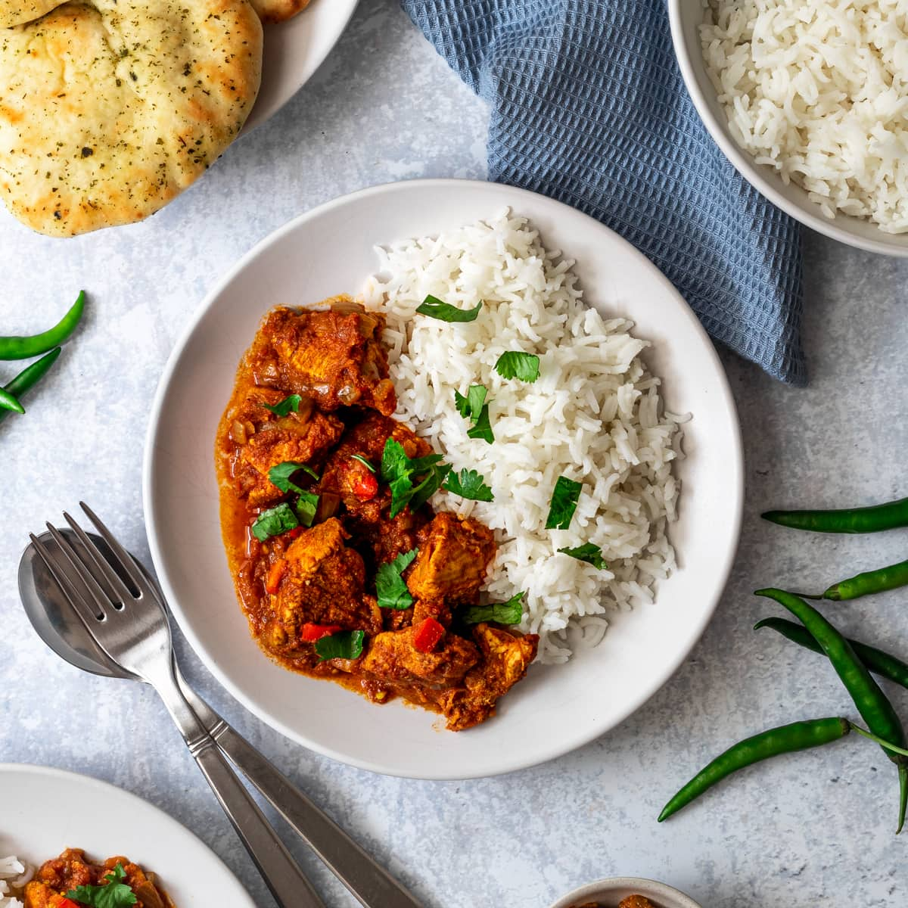

Chicken Bhuna

Description:
Chicken bhuna is an Indian curry with delicious fried onions and aromatic herb and spices that tastes
fantastic! Enjoy with freshly cooked basmati rice and naan bread!
Ingredients:
- 2 Tbsp of Vegetable Oil
- 3 Medium Onions (Finely Chopped)
- 1 Tsp of Salt
- 4 Cloves of Garlic (Crushed)
- 1 Tbsp of Minced Fresh Ginger
- 1/4 Cup of Hot Water
- 1 Tsp of Chili Powder
- 1 Tsp of Ground Coriander
- 1 Tsp of Ground Cumin
- 1/2 Tsp of Ground Tumeric
- 2 Medium Tomatoes (Chopped)
- 2 Green Chiles
- 2 Skinless, Boneless Chicken Breasts (Cubed)
- 1 Tsp of Curry Paste
- 1/4 Cup of Fresh Cilantro Leaves (Chopped)
Steps:
- Heat oil in a nonstick pan over high heat. Add onion and salt; cook and stir until onion has softened,
about 5 minutes.
- Reduce heat to low; stir in garlic and ginger until fragrant. Add hot water; cover, and cook, stirring
occasionally, until water has evaporated, about 5 minutes.
- Add chili powder, ground coriander, cumin, and turmeric; cook and stir over high heat until spices are
toasted, about 5 minutes. Stir in tomatoes and green chiles; cover and cook over low heat for
5 minutes.
- Add chicken; cook and stir over high heat until browned, 5 to 7 minutes. Stir in curry paste; reduce
heat to low, cover and cook until chicken is cooked through, adding a little water if necessary,
about 5 minutes. Check seasoning and sprinkle with freshly chopped cilantro.